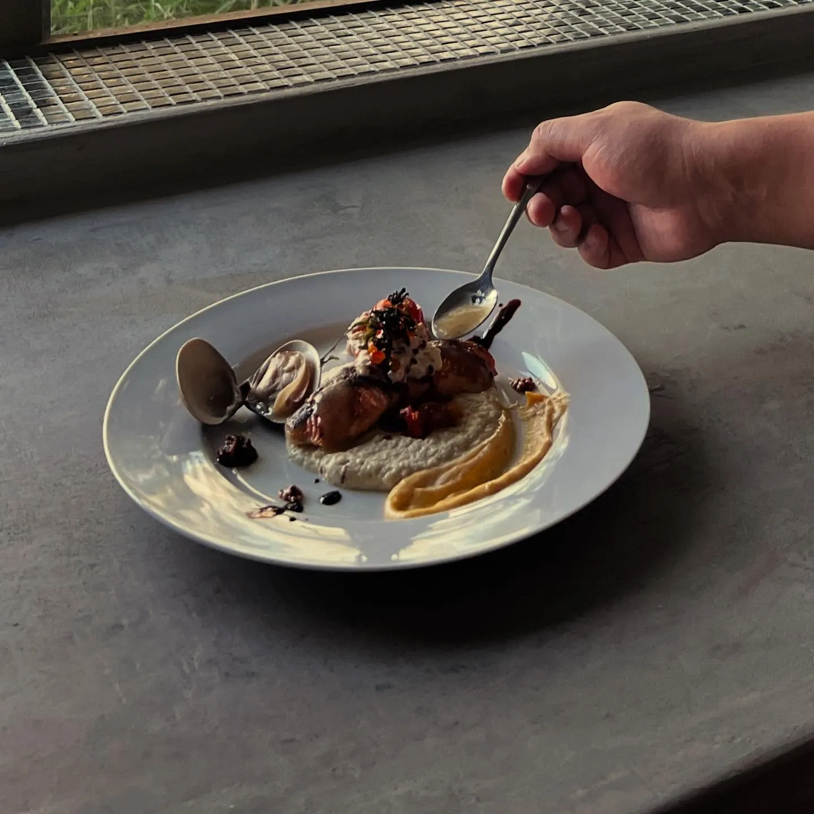
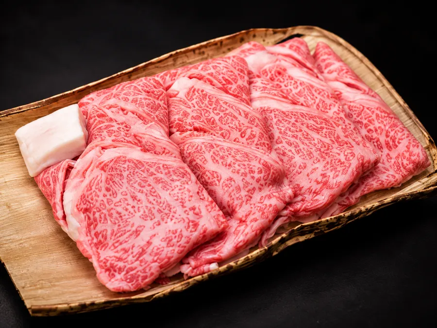
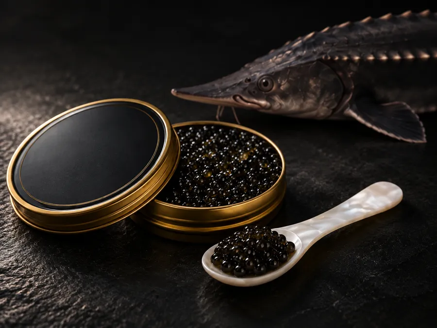

ホームパーティー
ご自宅で、気の合う方との食卓に。
PRIVATE CHEF & CATERING
出張シェフ・ケータリング
美食で彩る、特別なひとときを。
MASASHIシェフによる、
厳選食材を使用したコース料理。
既製品に頼らず、できる限りその場で手づくり。
人数・予算・会場・目的に合わせて、一組ごとにご提案します。
まだ内容が決まっていなくても、お気軽に。

YOUR OCCASION
「こんなこと頼める？」から、ご相談ください。
ご自宅で、気の合う方との食卓に。
大切な方をもてなす、特別な一日に。
会話が生まれる、集いの料理に。
企業やブランドの節目を華やかに。
関係者向けのお食事もご相談ください。
食材、テーマ、お祝いの演出から。
THE LIVEKITCHEN WAY

基本的にシェフ自身が仕込み、現場で調理・仕上げ。既製品をできるだけ使わず、会場の条件に合わせて、その場で完成させることを大切にしています。
人数、予算、会場、目的、お好み。お話を伺って、その日のお客様のためにメニューを組み立てます。
アレルギー、ハラールなどの食事制限、お子様の料理から、サプライズやテーマのある一皿まで。ご希望を伺い、対応できる方法を一緒に考えます。
「この食材を使いたい」「華やかに」「シンプルに」。シェフ本人や料理を作るスタッフと、細かなご希望まで相談できます。
PREMIUM INGREDIENTS
ご希望に合わせて、特別感のある食材もご提案します。


松阪牛シャトーブリアンきめ細やかな肉質と上品な甘みを、記念日や大切な会食にふさわしい一皿へ。
黄金イクラ澄んだ黄金色とプチプチした食感。前菜や華やかな盛りつけのアクセントに。

キャビア濃厚な旨みと上品な余韻を、コースやケータリングの印象的なひと口に。
OUR SERVICE PHILOSOPHY
私たちのサービス理念
MASASHIシェフが厳選した旬の食材を使用し、
素材の魅力を最大限に引き出した特別なコース料理をご提供します。
一皿一皿にこだわりを込めた、
MASASHIシェフならではの厳選食材コースをぜひお楽しみください。
お客様の笑顔と満足を第一に、細やかな気配りとプロフェッショナルなサービスを提供いたします。ご質問やご相談がございましたら、いつでもお気軽にお問い合わせください。皆様の大切なシーンを彩るお手伝いをさせていただくことを、心より楽しみにしております。
CHEF MASASHI

レストランで培った技術と経験を、
レストランの外へ。
弊社は東京都に拠点を置き、調理業界で20年以上の経験を持っています。MASASHIシェフによる、厳選食材を使用したコース料理を中心に、出張シェフとケータリングを手がけています。
経歴・資格 / 主な実績（一部）
Netflix日本法人向けケータリング（プロヴェナンスディストリービションズ経由）
Meta関連案件（同経由）
すみだ水族館向けケータリング
PLANS & PRICING
人数・会場・料理内容によって料金は変わります。
「30名・予算15万円程度」など、ご予算からのご相談も歓迎します。
お見積り時に、出張・設営・サービスなどの費用と提供範囲も含めてご案内します。
メニューが決まっていなくても大丈夫です。
OUR WORK
QUESTIONS & ANSWERS
LET’S TALK ABOUT YOUR DAY
まだ内容が決まっていなくても大丈夫です。
人数と大体のご予算だけでも、お気軽にご相談ください。